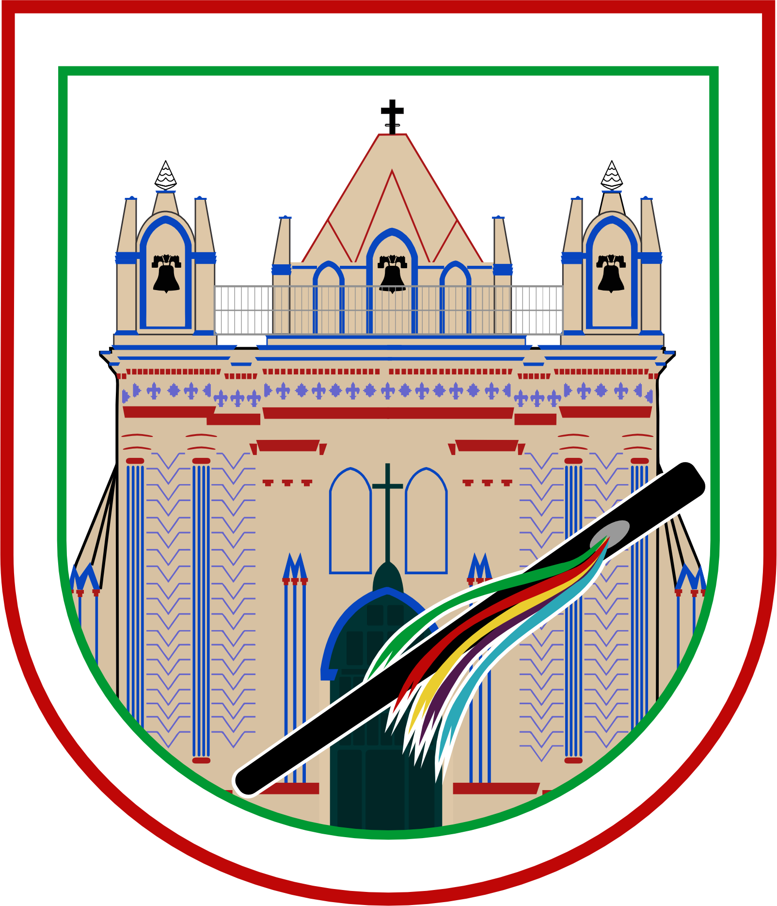

<nav class="menuCSS3 flex justify-content-between p-3" id="menu">
    <div class="logo">
        <a routerLink="/inicio">
            
        </a>
    </div>
    <!-- Menú de escritorio -->
    <ul class="menu-items uppercase">
        <li><a routerLink="/inicio" routerLinkActive="active-link">Inicio</a></li>
        <li>
            <a>Ayuntamiento</a>
            <ul>
                <li><a [routerLink]="['/ayuntamiento', 'presidente']" routerLinkActive="active-link">Presidente Municipal</a></li>
                <li><a [routerLink]="['/ayuntamiento', 'cabildo']" routerLinkActive="active-link">Integración de cabildo</a></li>
                <li><a [routerLink]="['/ayuntamiento', 'directorio']" routerLinkActive="active-link">Directorio Municipal</a></li>
            </ul>
        </li>
        <li><a [routerLink]="['/dif']" routerLinkActive="active-link">DIF</a></li>
        <li><a [routerLink]="['/obras',0]" routerLinkActive="active-link">Obras públicas</a></li>
        <li>
            <a>Transparencia</a>
            <ul>
                <li><a [routerLink]="['/avisoPrivacidad']" routerLinkActive="active-link">Aviso de privacidad</a></li>
                <li><a [routerLink]="['/otrosDocumentos']" routerLinkActive="active-link">Otros documentos</a></li>
            </ul>
        </li>
        <li><a [routerLink]="['/sevac']" routerLinkActive="active-link">SEVAC</a></li>
    </ul>
</nav>

<nav class="menuMobil">
    <div class="flex justify-content-between p-3 menuMobilSticky">
        <div class="w-5 md:w-4">
            <a routerLink="/inicio">
                
            </a>
        </div>
        <div class="my-auto">
            <button 
                (click)="sidebarVisible = true"
                class="custom-button">
                    <i class="pi pi-bars"></i>
            </button>
        </div>
    </div>
</nav>

<p-sidebar #sidebarRef [(visible)]="sidebarVisible">
    <ng-template pTemplate="headless">
        <div class="flex flex-column h-full">
            <div class="flex align-items-center justify-content-between px-4 pt-3 flex-shrink-0">
                <span class="inline-flex align-items-center gap-2 w-2">
                    
                </span>
                <span>
                    <p-button type="button" (onClick)="closeCallback($event)" icon="pi pi-times" rounded="true" outlined="true" styleClass="h-2rem w-2rem"></p-button>
                </span>
            </div>
            <div class="overflow-y-auto">

                <ul class="list-none p-0 m-0 overflow-hidden uppercase">
                    <li>
                        <a routerLink="/inicio" pRipple class="flex align-items-center cursor-pointer p-3 border-round text-700 hover:surface-100 transition-duration-150 transition-colors p-ripple no-underline">
                            <i class="pi pi-home mr-2"></i>
                            <span class="font-medium">Inicio</span>
                        </a>
                    </li>
                    <li>
                        <a
                            pRipple
                            pStyleClass="@next"
                            enterClass="hidden"
                            enterActiveClass="slidedown"
                            leaveToClass="hidden"
                            leaveActiveClass="slideup"
                            class="flex align-items-center cursor-pointer p-3 border-round text-700 hover:surface-100 transition-duration-150 transition-colors p-ripple"
                        >
                            <i class="pi pi-building mr-2"></i>
                            <span class="font-medium">Ayuntamiento</span>
                            <i class="pi pi-chevron-down ml-auto"></i>
                        </a>
                        <ul class="list-none py-0 pl-3 pr-0 m-0 hidden overflow-y-hidden transition-all transition-duration-400 transition-ease-in-out">
                            <li>
                                <a [routerLink]="['/ayuntamiento', 'presidente']" pRipple class="flex align-items-center cursor-pointer p-3 border-round text-700 hover:surface-100 transition-duration-150 transition-colors p-ripple no-underline">
                                    <i class="pi pi-book mr-2"></i>
                                    <span class="font-medium">Presidente Municipal</span>
                                </a>
                            </li>
                            <li>
                                <a [routerLink]="['/ayuntamiento', 'cabildo']" pRipple class="flex align-items-center cursor-pointer p-3 border-round text-700 hover:surface-100 transition-duration-150 transition-colors p-ripple no-underline">
                                    <i class="pi pi-book mr-2"></i>
                                    <span class="font-medium">Integración de cabildo</span>
                                </a>
                            </li>
                            <li>
                                <a [routerLink]="['/ayuntamiento', 'directorio']" pRipple class="flex align-items-center cursor-pointer p-3 border-round text-700 hover:surface-100 transition-duration-150 transition-colors p-ripple no-underline">
                                    <i class="pi pi-book mr-2"></i>
                                    <span class="font-medium">Directorio Municipal</span>
                                </a>
                            </li>
                        </ul>
                    </li>
                    <li>
                        <a [routerLink]="['/dif']" pRipple class="flex align-items-center cursor-pointer p-3 border-round text-700 hover:surface-100 transition-duration-150 transition-colors p-ripple no-underline">
                            <i class="pi pi-users mr-2"></i>
                            <span class="font-medium">DIF</span>
                        </a>
                    </li>
                    <li>
                        <a [routerLink]="['/obras',0]" pRipple class="flex align-items-center cursor-pointer p-3 border-round text-700 hover:surface-100 transition-duration-150 transition-colors p-ripple no-underline">
                            <i class="pi pi-images mr-2"></i>
                            <span class="font-medium">Obras públicas</span>
                        </a>
                    </li>
                    <li>
                        <a
                            pRipple
                            pStyleClass="@next"
                            enterClass="hidden"
                            enterActiveClass="slidedown"
                            leaveToClass="hidden"
                            leaveActiveClass="slideup"
                            class="flex align-items-center cursor-pointer p-3 border-round text-700 hover:surface-100 transition-duration-150 transition-colors p-ripple"
                        >
                            <i class="pi pi-bell mr-2"></i>
                            <span class="font-medium">Transparencia</span>
                            <i class="pi pi-chevron-down ml-auto"></i>
                        </a>
                        <ul class="list-none py-0 pl-3 pr-0 m-0 hidden overflow-y-hidden transition-all transition-duration-400 transition-ease-in-out">
                            <li>
                                <a [routerLink]="['/avisoPrivacidad']" pRipple class="flex align-items-center cursor-pointer p-3 border-round text-700 hover:surface-100 transition-duration-150 transition-colors p-ripple no-underline">
                                    <i class="pi pi-file-pdf mr-2"></i>
                                    <span class="font-medium">Aviso de privacidad</span>
                                </a>
                            </li>
                            <li>
                                <a [routerLink]="['/otrosDocumentos']" pRipple class="flex align-items-center cursor-pointer p-3 border-round text-700 hover:surface-100 transition-duration-150 transition-colors p-ripple no-underline">
                                    <i class="pi pi-file-o mr-2"></i>
                                    <span class="font-medium">Otros Documentos</span>
                                </a>
                            </li>
                        </ul>
                    </li>
                    <li>
                        <a [routerLink]="['/sevac']" pRipple class="flex align-items-center cursor-pointer p-3 border-round text-700 hover:surface-100 transition-duration-150 transition-colors p-ripple no-underline">
                            <i class="pi pi-calendar mr-2"></i>
                            <span class="font-medium">SEVAC</span>
                        </a>
                    </li>
                </ul>

            </div>
        </div>
    </ng-template>
</p-sidebar>